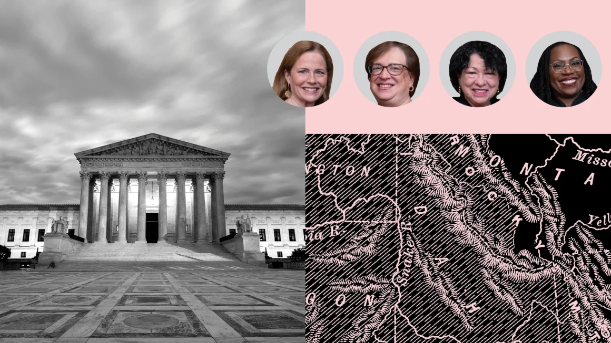

Exclusive: Inside the Supreme Court's negotiations and compromise on
Idaho's abortion ban
By Joan Biskupic, CNN Chief Supreme Court Analyst
Updated 8:32 AM EDT, Mon July 29, 2024
CNN - The Supreme Court began the year poised to
build on its 2022 decision overturning Roe v. Wade and to deliver a
new blow to abortion access.

In January, the court took the extraordinary step of letting Idaho
enforce its ban on abortion with an exception only to prevent the
death of a pregnant woman, despite an ongoing challenge from the
Biden administration arguing that it intruded on federal protections
for emergency room care.
No recorded vote was made public, but CNN has learned the split was
6-3, with all six Republican-nominated conservatives backing Idaho,
over objections from the three Democratic-appointed liberals. But
over the next six months, sources told CNN, a combination of
misgivings among key conservatives and rare leverage on the part of
liberal justices changed the course of the case. The first twist
came soon after oral arguments in late April, when the justices
voted in private on the merits of the conflict between Idaho and the
Biden administration. There suddenly was no clear majority to
support Idaho, sources said. In fact, there was no clear majority
for any resolution.
As a result, Chief Justice John Roberts opted against assigning the
court’s opinion to anyone, breaking the usual protocol for cases
after oral arguments. That move would have marked a startling turn
of events for any dispute, but it was particularly surprising here
because the court had already given Idaho the advantage by granting
its appeal before a hearing on the merits of the case could be held
in a US appellate court. Instead, a series of negotiations led to an
eventual compromise decision limiting the Idaho law and temporarily
forestalling further limits on abortion access from the high court.
The final late-June decision would depart from this year’s pattern
of conservative dominance.
This exclusive series on the Supreme Court is based on CNN sources
inside and outside the court with knowledge of the deliberations.
White House response to overturning Roe
After the court in June 2022 overturned Roe v. Wade, more than a
dozen states like Idaho began outright banning abortion. The Idaho
law had exemptions only to prevent death of the pregnant woman and
in instances of rape or incest. Other states instituted new
restrictions on the procedure. The Biden administration, supporting
reproductive rights, tried to immediately counteract some effect of
the Supreme Court’s decision. It issued formal guidance saying the
Emergency Medical Treatment and Labor Act (EMTALA), which requires
stabilizing treatment regardless of a patient’s ability to pay,
would preempt any state abortion ban in situations when an emergency
termination was needed.
In August 2022, the Justice Department sued Idaho, seeking an order
that would block the state from enforcing its ban in emergency rooms
when it conflicts with EMTALA. Idaho lost in an initial proceeding
in a US district court, as a judge issued a temporary injunction
against the abortion ban. While an appeal was pending, Idaho sought
the high court’s intervention.
The impact of the justices’ January order allowing Idaho’s ban to
take effect was urgent and immediate. The state’s largest provider
of emergency services increasingly had to airlift pregnant women
experiencing complications out of state. As the weeks passed and
Idaho and the federal government began formally making their case in
filings before scheduled April oral arguments, the situation for
pregnant women in medical emergencies – risking organ failure, the
loss of fertility and permanent disability – became more evident. So
did defects in some of Idaho’s claims. Its lawyers argued that
EMTALA would require hospitals to terminate a pregnancy if a woman’s
mental health (rather than physical condition) required it and would
force individual doctors to perform abortions despite conscience
objections – two contentions US Solicitor General Elizabeth Prelogar
said were groundless. Idaho’s built-in lead began to slip,
particularly against the larger national backdrop over agitation for
reproductive rights and the politically charged presidential
election season. The court had given Idaho the advantage in January
by granting its request for an early hearing. Such expedited review
is allowed only when, according to Supreme Court procedure, “the
case is of such imperative public importance as to justify deviation
from normal appellate practice.”
During the April 24 hearing, signs that the conservative bloc was
splintering emerged. Justice Amy Coney Barrett, who had earlier
voted to let the Idaho ban be enforced, challenged the state
lawyer’s assertions regarding the ban’s effect on complications that
threatened a woman’s reproductive health. She said she was “shocked”
that he hedged on whether certain grave complications could be
addressed in an emergency room situation. Barrett’s concerns echoed,
to some extent, those of the three liberals, all women, who had
pointed up the dilemma for pregnant women and their physicians.
Doctors in Idaho had told the court that if they complied with
federal emergency-care law and helped a pregnant woman in peril,
they would be risking criminal conviction. Alternatively, if they
transferred patients needing stabilizing care out of state, they
risked seriously delaying medical attention and could exacerbate the
harm.
Private vote and rare liberal leverage
Judging from the public arguments alone, there appeared a chance
the court’s four women might vote against Idaho, and the five
remaining conservatives, all men, in favor of the state and its
abortion prohibition. But at the justices’ private vote two days
later, Roberts and Justice Brett Kavanaugh shattered any split along
gender lines. They expressed an openness to ending the case without
resolving it. They worked with Barrett on a draft opinion that would
dismiss the case as “improvidently granted.” Barrett had come to
believe the case should not have been heard before lower court
judges had resolved what she perceived to be discrepancies over when
physicians could perform emergency abortions, even if a threat to
the woman’s life was not imminent.
She would eventually deem acceptance of the case a “miscalculation”
and suggest she had been persuaded by Idaho’s arguments that its
emergency rooms would become “federal abortion enclaves governed not
by state law, but by physician judgment, as enforced by the United
States’s mandate to perform abortions on demand.” She believed that
claim was undercut by the US government’s renouncing of abortions
for mental health and asserting that doctors who have conscience
objections were exempted. In essence, Barrett, along with Roberts
and Kavanaugh, were acknowledging they had erred in the original
action favoring Idaho, something the court is usually loath to
admit. They attributed it to a misunderstanding of the dueling
parties’ claims – a misunderstanding not shared by the other six
justices, who remained firm about which side should win. During a
wide-ranging talk at a legal conference in Sacramento on Thursday,
liberal Justice Elena Kagan said the court may have learned “a good
lesson” from the Idaho case: “And that may be … for us to sort of
say as to some of these emergency petitions, ‘No, too soon, too
early. Let the process play out.’” During internal debate from the
end of April through June, the court’s three other conservative
justices – Samuel Alito, Clarence Thomas and Neil Gorsuch believed
the facts on the ground were clear and that Idaho’s position should
still prevail. They said the 1986 EMTALA did not require hospitals
to perform any abortions and could not displace the state’s ban.